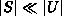

Data Structures and Algorithms
with Object-Oriented Design Patterns in Java
Data Structures and Algorithms
with Object-Oriented Design Patterns in JavaThe array implementation of multisets is really only practical if the number of items in the universe, N=|U|, is not too large. If N is large, then it is impractical, or at least extremely inefficient, to use an array of N counters to represent the multiset. This is especially so if the number of elements in the multisets is significantly less than N.
If we use a linked list of elements to represent a multiset S, the space required is proportional to the size of the multiset, |S|. When the size of the multiset is significantly less than the size of the universe, , it is more efficient in terms of both time and space to use a linked list.
Program  introduces the
the MultisetAsLinkedList class.
The MultisetAsLinkedList extends the AbstractSet
class defined in Program
and it implements the Multiset interface
defined in Program .
In this case a linked list of Ints
is used to record the contents of the multiset.
introduces the
the MultisetAsLinkedList class.
The MultisetAsLinkedList extends the AbstractSet
class defined in Program
and it implements the Multiset interface
defined in Program .
In this case a linked list of Ints
is used to record the contents of the multiset.
How should the elements of the multiset be stored in the list? Perhaps the simplest way is to store the elements in the list in no particular order. Doing so makes the insert operation efficient--it can be done in constant time. Furthermore, the isMember and withdraw operations both take O(n) time, where n is the number of items in the multiset, regardless of the order of the items in the linked list.
Consider now the union, intersection, and difference of two multisets, say S and T. If the linked list is unordered, the worst case running time for the union operation is O(m+n), where m=|S| and n=|T|. Unfortunately, intersection, and difference are both O(mn).
If, on the other hand, we use an ordered linked list, union, intersection, and difference can all be done in O(m+n) time. The trade-off is that the insertion becomes an O(n) operation rather than a O(1). The MultisetAsLinkedList implementation presented in this section records the elements of the multiset in an ordered linked list.

Program: MultisetAsLinkedList fields.
 Copyright © 1998 by Bruno R. Preiss, P.Eng. All rights reserved.
Copyright © 1998 by Bruno R. Preiss, P.Eng. All rights reserved.